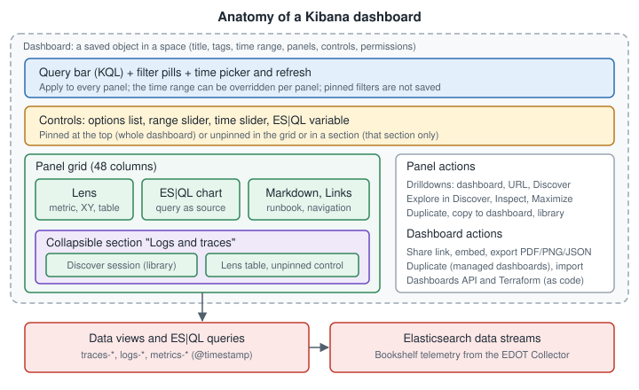

Kibana: Building Dashboards
|
This content was generated with the assistance of AI and should be verified against the official documentation before being relied on in production. |
Checked on 2026-11-09 against Kibana 9.5.x.
To do this by hand, follow Create a Dashboard and the First Lens Panel and Arrange and Connect a Dashboard.
A Kibana dashboard is a saved page of panels that share one query bar, one set of filters and one time range. It is the standing answer to "is the service healthy?", the same job a Grafana dashboard does (compare Grafana: Building Dashboards). What to put on it is a design question, treated in Dashboard Design Principles and Choosing Visualizations; this page is the mechanics: how a dashboard is created and saved in Kibana 9.5, how panels are arranged, how the query bar, filters and time range steer every panel, which dashboards are managed by an integration, and then the step-by-step build of the "Bookshelf service health" dashboard used by the lab and the alerting pages. The panels themselves are explained in Lens, ES|QL Visualizations & Variable Controls and Maps, Vega & Other Panels; controls and drilldowns, sharing and dashboards as code have their own pages (Controls & Drilldowns, Sharing, Reporting & Saved Objects, Dashboards as Code).

Dashboards are generally available on Elastic Cloud Serverless and on the Elastic Stack. Where a feature below depends on the version, the text says so: this page was checked against 9.5, and anything marked "9.6+" or "Planned" is not in 9.5.
Source: Kibana: Dashboards (overview) and Ways to build a dashboard.
Creating a dashboard
You need the All privilege for the Dashboard feature (see Spaces, Roles & Privileges), indexed data and at least one data view (see Data Views & Discover). The flow:
-
Open Dashboards and select Create dashboard. The dashboard opens in edit mode.
-
Add content: new visualizations (Lens, the default editor, or Maps and the other panel types), saved visualizations and Discover sessions from the Visualize library, sections, text and image panels, and controls.
-
Arrange the panels (next section).
-
Open Settings and set the title, description and tags, then the display options and select Apply: store the time with the dashboard, use margins between panels, show panel titles, show panel borders, and sync colour palettes, cursor and tooltips across panels.
-
Save the dashboard.
Three details of that flow matter for monitoring:
-
By value or from the library. A panel created directly on the dashboard belongs to that dashboard alone; removing it deletes it. A panel added from the library stays linked to the library item, so editing the item changes it on every dashboard that uses it (unlink the panel to make it local). The library is the Kibana equivalent of Grafana’s library panels: use it for the five or six panels (error ratio, latency percentiles) that must read the same on every service dashboard.
-
Store time with dashboard. Off, the dashboard opens with whatever range the person has in the time picker; on, it opens with the saved one. For an on-call dashboard store a range, for example the last 6 hours, so that everybody starts from the same view.
-
Permissions. From 9.3 on the Stack (generally available on Serverless) the owner or a Kibana administrator sets Can edit or Can view for the dashboard in the space. Viewers can duplicate it, not edit or delete it; administrators always keep write access and the owner cannot be changed. Dashboards that other people depend on should be set to Can view, with the editable copy in Git (see Dashboards as Code).
The page lists up to 1,000 panels per dashboard (generally available on the Stack since 9.4). On the Stack, creating a dashboard with the Dashboards API or from an AI chat is in preview in 9.4 and the API is generally available from 9.5 (see the as-code page); Elastic Agent Builder can build a dashboard of ES|QL panels from a description and is generally available on the Stack from 9.5.
Source: Kibana: Create a dashboard from the Kibana UI and Create dashboards using AI. The tutorials Website logs and Time series from eCommerce data build dashboards on the sample data sets.
Arranging panels and sections
Source: Kibana: Organize dashboard panels.
In edit mode drag a panel by its move control and resize it from the bottom-right corner; panels snap to a 48-column grid with fixed-height rows, and a new panel defaults to half the width (24 columns). Keyboard users tab to the move or scale control, press Enter or Space to lock it, use the arrow keys and release (generally available on the Stack since 9.1). The documentation’s sizing advice is a good first layout:
| Panel | Suggested width (columns) | Notes |
|---|---|---|
Single-value metric |
12 (8 on a dense row) |
Key metrics on the top row, equal heights within a row. |
Bar chart, gauge, pie |
24 |
Half width. |
Time series |
16 to 48 |
Wide enough to read a trend; full width for the main latency chart. |
Heat map |
48 |
Needs the width. |
Table |
24 to 48 |
Wider when it has many columns. |
Collapsible sections group panels under a title. Add one from edit mode, label it and drag panels into it (a section must be expanded to receive panels). The collapsed or expanded state is saved, so viewers open the dashboard the way the author left it, and only the expanded sections load, which makes a collapsed "Dependencies" section free until someone opens it. A control placed inside a section filters only that section (scope is covered on the controls page). Sections are generally available on the Stack since 9.1, and the section-scoped controls since 9.4.
Limits (generally available on Serverless and on the Stack since 9.4): 1,000 top-level items (panels, unpinned controls and sections together), 1,000 panels per section and 100 pinned controls. Through the Dashboards API the panels, sections and pinned controls together cannot exceed 1,000. A dashboard near these limits is a design problem long before it is a technical one: split it into an overview and detail dashboards linked by drilldowns.
Panel options. The panel menu’s Settings shows or hides the title, sets a custom title and description (write the description: it explains what the panel measures to the person at 2 AM), shows or hides the border (Stack since 9.4) and applies a custom time range to the one panel. Duplicate places a copy next to the original, Copy to dashboard copies a panel to another dashboard and Maximize opens it full screen (a link shared while a panel is maximized opens that panel full screen).
Query bar, filters, time range and refresh
Everything on the dashboard obeys the same three inputs.
-
The query bar takes KQL expressions such as
status:errororresponse_time > 1000and suggests fields and values as you type (the language is taught in Querying with KQL, ES|QL & PromQL). -
Filter pills are added by clicking a chart element, with the legend actions Filter for and Filter out, or in the filter editor. A pill can be pinned, edited, negated, temporarily disabled or deleted, and the Query menu applies most of these actions to all pills at once. A pinned pill follows you from app to app but is not saved with the dashboard; saved pills are. Collapsing the pill row and the Apply to all action are generally available on the Stack from 9.4.
-
The global time filter sets the range of every panel and the refresh rate. A single panel can carry its own custom range (set in its Settings flyout); the panel header then shows that range, so a "last 15 minutes" tile beside a "last 7 days" tile is explicit and not a surprise. If the dashboard loads slowly, Cancel stops the running queries and Refresh loads it again (generally available on Serverless; Planned on the Stack).
Panels built from ES|QL honour the same controls through the ?_tstart and ?_tend parameters (see the ES|QL page). Values computed in the query
(EVAL or STATS results) cannot be used to filter or drill down, which is why a table that should drill into a route needs the
route as an indexed field in the BY clause.
Looking behind a panel. A Lens panel offers Explore in Discover (not for charts with several data layers or time shifts); a Discover session panel offers
Open in Discover; other single-data-view panels offer Explore underlying data, which an administrator must enable with
xpack.discoverEnhanced.actions.exploreDataInContextMenu.enabled (and unavailable on Serverless). Selecting a value or dragging a time range on a chart
and choosing Explore underlying data is for self-managed deployments and is enabled with xpack.discoverEnhanced.actions.exploreDataInChart.enabled.
Inspect shows the data (downloadable as formatted or raw CSV, one file per layer) and the requests (statistics, clusters and shards, request and response, with a link
to open the request in Console); Show visualization configuration lets a read-only viewer change a panel temporarily, and the changes are discarded when the
flyout closes. Full screen in the application menu hides everything but the dashboard (Escape leaves it).
Preview and planned items on that page: fast mode for ES|QL panels (approximate results, shown with a bolt badge) is a preview on Serverless and on the
Stack since 9.5; background search is a Stack preview from 9.2 and unavailable on Serverless.
Managed dashboards and duplicating
Dashboards that arrive with an integration are managed: they show a Managed badge in the application menu and are not edited in place. Select the badge and Duplicate, or exit edit mode and use Duplicate in the application menu, enter a title (and, optionally, a description and tags) and save; you are taken to the copy, which is yours to change. Duplicating needs the All privilege for the Dashboard feature. The same action copies your own dashboards, which is the safe way to experiment with a production dashboard.
Source: Kibana: Duplicate a dashboard.
Finding and managing dashboards
Source: Kibana: Manage dashboards.
The Dashboards page lists dashboards and searches by name, description or tag. It filters by tag or by creator (the user who created or imported the dashboard; integration dashboards show Elastic as creator, and creator information exists only for dashboards created or imported in 8.14 or later), and sorts by name or by last update (the default is most recently viewed). Starring a dashboard from the list or from the dashboard itself adds it to the personal Starred tab; favourites are not shared. Recently viewed in the navigation menu is generally available on Serverless and Planned on the Stack. View details on the list shows a graph of total views over the last 90 days: the cheap way to find the dashboards nobody opens. Per-user activity logging (creation, updates, deletion, views and refreshes) is a Stack preview from 9.5 and has to be configured.
Tags are assigned when creating or editing a dashboard and filter the list. Agree on a small vocabulary (bookshelf, golden-signals, slo) and on
the case, because a tag spelled differently is another tag. Visualizations and annotation groups live in the Visualize library: on the Stack it moved to the
Dashboards page in 9.4 (in 9.0 to 9.3 it was under the navigation menu).
Export, import and as-code workflows are the subject of the sharing page and Dashboards as Code. Deleting a dashboard removes the saved object: unlike Grafana’s Recently deleted, the dashboards documentation describes no trash, so export first (and prefer Git as the history).
Build the Bookshelf service health dashboard
The target is the overview level of the hierarchy in
Dashboard Design Principles: the first screen says whether Bookshelf is healthy, the detail is
below. The lab (Hands-on Lab, profile kibana) sends Bookshelf traces, logs and metrics through the EDOT Collector to
Elasticsearch 9.5.6 (see Ingesting Monitoring Data), and the load generator produces the
traffic. The field names below are the ones used across this section; use the names that Discover shows for your mapping.
-
Data views. Create the data views
traces-*,logs-*andmetrics-*with@timestampas the time field (see Data Views & Discover); ES|QL panels need none. -
Create the dashboard, title "Bookshelf service health", tags
bookshelfandgolden-signals. In Settings turn on Store time with dashboard, Sync cursor across panels and Sync tooltips across panels. Set the time picker to the last 6 hours and a 30 second refresh, and save once. -
Controls (pinned): an options list on
service.nameand one onurl.path, as described in Controls & Drilldowns. -
Sections: "Golden signals" (expanded), "Logs and traces" and "Dependencies" (collapsed).
-
Section "Golden signals", top row of four single-value metrics, 12 columns wide each, on the
traces-*data view and filtered in the query bar of the panel or withservice.name : "bookshelf":-
Requests: a Metric panel with the formula
count(). -
5xx ratio: the formula
count(kql='http.response.status_code >= 500') / count(), number format Percent, with colour bands that turn red from 0.05 (the alert threshold of the lab). Without a threshold on the tile nobody knows whether 3 percent is bad. -
p95 latency: a Metric panel with the
percentilefunction (95) on the span duration field of your mapping, shown in seconds, red from 0.5 s (the lab SLO). -
Instances up: a Metric panel with a unique count of the service instance resource attribute, so that a restart is visible.
-
-
Section "Golden signals", two Lens charts: requests over time split by the status class, and the p95 latency by
url.pathas lines, with a reference line at 0.5 s. Give every panel a description. -
Section "Logs and traces": a Discover session saved to the library, filtered to the error lines (
severity_text : "ERROR"), added with Add from library; a Markdown panel with the runbook links and a Links panel to the APM service page. -
Section "Dependencies": JVM heap and database connection pool utilisation from
metrics-*(the Micrometer metrics are described in Spring Boot Metrics and Observability). -
Permissions and save: set Can view for the team after your last edit, and save.
-
Verify: start the load generator, then use the lab’s failing-request mode to raise the 5xx ratio. The ratio tile turns red; hover a time series and check that the cursor follows on the other charts; from the ratio panel choose Explore in Discover and confirm the same documents; open Inspect and read the request that Kibana sent to Elasticsearch.
Reference: the panel types and their options are on Kibana: Lens and Lens visualizations using ES|QL queries; the same dashboard as JSON is the example on Dashboards as Code. Keep the first screen to the four tiles and two charts: everything else is one scroll or one click away.
Things that go wrong
-
A panel shows "no data" after import or copy: it references a data view or library item by ID and the ID does not exist in the target (see the as-code page).
-
The numbers differ between two panels: one has a custom time range, a filter in its own query, a different sampling setting or a different data view.
-
A removed panel is gone: panels created on the dashboard are deleted with it; library panels remain in the library and on other dashboards.
-
Someone changed a shared dashboard: use Can view for readers and keep the definition in Git.
-
A managed dashboard cannot be edited: it comes from an integration and is changed by duplicating it; make your changes on the copy.
-
A drilldown or filter on a computed value does nothing: values created at query time (formulas,
STATSorEVALresults) cannot be filtered or drilled into. -
The dashboard is slow: too many expanded panels, ES|QL panels with unbounded
FROM logs-*and no time filter, or high-cardinality breakdowns. Collapse sections, cancel the load, and use Inspect on the slow panel.
In the books
Shah (Kibana 8.x Quick Start Guide, chapter 8) walks through the same flow on Kibana 8.x: open the sample dashboards, edit one with Add from library, create a dashboard from scratch by creating a visualization in Lens and returning to the dashboard, save it, and share it from the Share menu. Chhajed (Learning ELK Stack) describes the Kibana 4 dashboard page (building, saving and loading a dashboard), and Melachi (Elastic from A to Z, section 3.7) builds a Metricbeat dashboard step by step from separately saved visualizations. The principle that a dashboard is built from reusable saved visualizations still holds. What has changed: index patterns are data views; the editor is Lens or ES|QL; sections, pinned controls and the 48-column grid exist; managed dashboards must be duplicated before editing; permissions (Can edit and Can view) are part of the dashboard; the Share menu was replaced by the Export toolbar for reports (see the sharing page); and dashboards can be created and kept as code through an API that is generally available from 9.5.